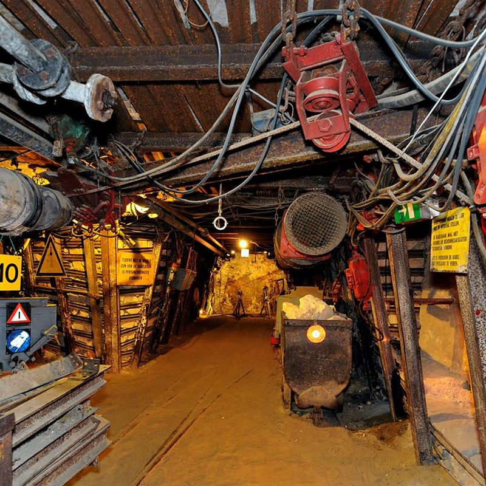

☰
Steenkolenmijn Valkenburg
Stap samen met een ex-mijnwerker in de ondergrondse wereld van de steenkoolwinning.
Met jarenlange ervaring als koempel weten de gidsen je op een levendige manier te boeien over de steenkoolwinning in Zuid-Limburg.
Geschiedenis
In 1916 werd op initiatief van Emile Caselli een bezoekersmijn gemaakt in een oude door blokbrekers ontgonnen mergelgroeve in het toeristenstadje Valkenburg.
De achtergrond hiervan was dat de toen nog werkende kolenmijnen in Limburg veel aanvragen kregen voor bezoeken ondergronds, maar deze niet konden inwilligen omdat het daar te gevaarlijk was voor bezoekers.
Op 21 juli 1917 werd de Steenkolenmijn Valkenburg geopend. Met hulp van het Staatstoezicht op de Mijnen werden steeds de nieuwste en modernste technieken uit de Nederlandse mijnen toegevoegd aan de presentatie in het museum.
Vooral in de jaren 70 van de 20e eeuw, na de sluiting van de Nederlandse steenkoolmijnen, werd het museum aanzienlijk uitgebreid.
